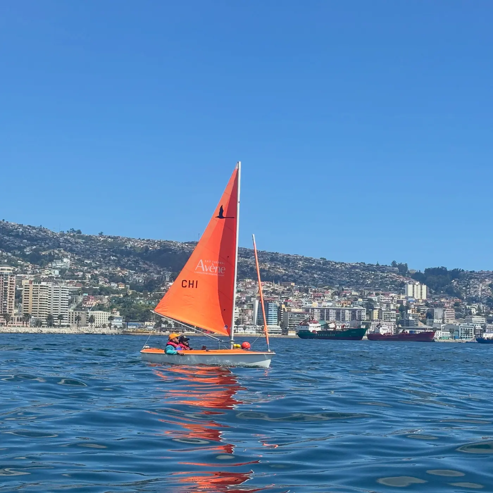

NAVEGACIÓN HANSA
Tu primera experiencia en un velero Hansa
Acércate a la navegación en una embarcación de iniciación diseñada para facilitar la participación a bordo. Con un instructor y un participante, conocerás las nociones básicas de navegación.
Duración: 1,5 horasModalidad: 1 participante + instructor
Ver detalles